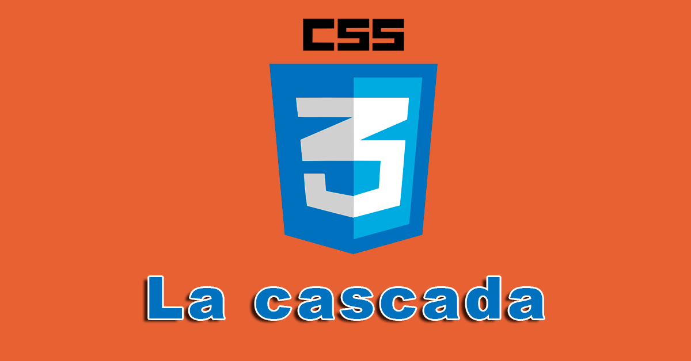
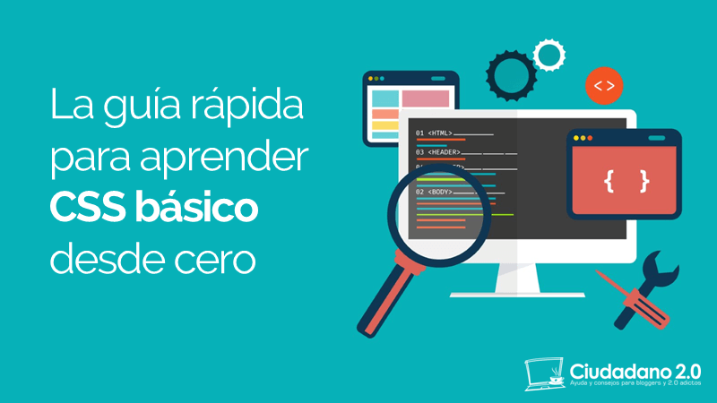
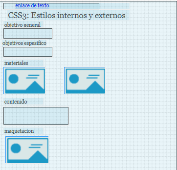

Tema: :CSS3: Estilos internos y Externos,Selectores CSS
Objetivo general:
fomentar a los estudiantes del curso de diseño de sitios web a practicar el css3
Objetivos especificos:
1.Conocer y descrubir el estilo (css3) Cascading Style Sheets.
2.decubri los diferentes estilos y formas que se pueden uilizar en los sitios web y demas plataformas
3.aprender a definir la estética de un sitio web, inplementando las diferentes funciones de css3
Materiales:
Imagenes:

css3: https://html5ycss3esp.blogspot.com/2019/01/la-cascada-en-css3.html

css3: https://www.ciudadano2cero.com/aprender-css-basico-desde-cero/
Contenido:
Bienvenidos al curso de DISEÑO DE SITIOS WEB
acontinuaion Vamos a ver el lenguaje de programacion css3
CSS3 es un lenguaje usado para definir la presentación de un documento estructurado, escrito en HTML o XM
ayudandonos en la estetica y presentacion de sitios web como por ejemplo;(colores, tamaños de las fuentes, tamaños de elemento)
Maquetación:
